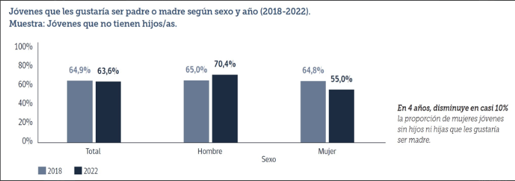
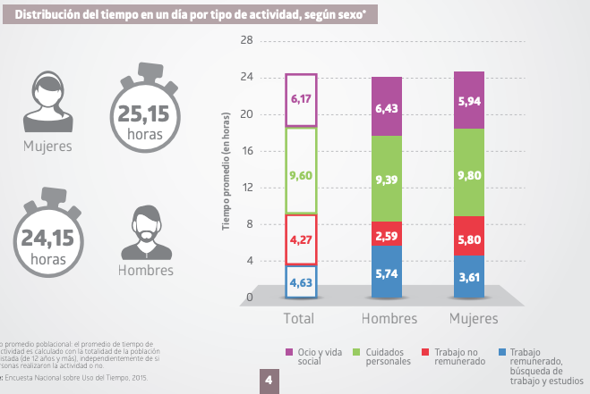
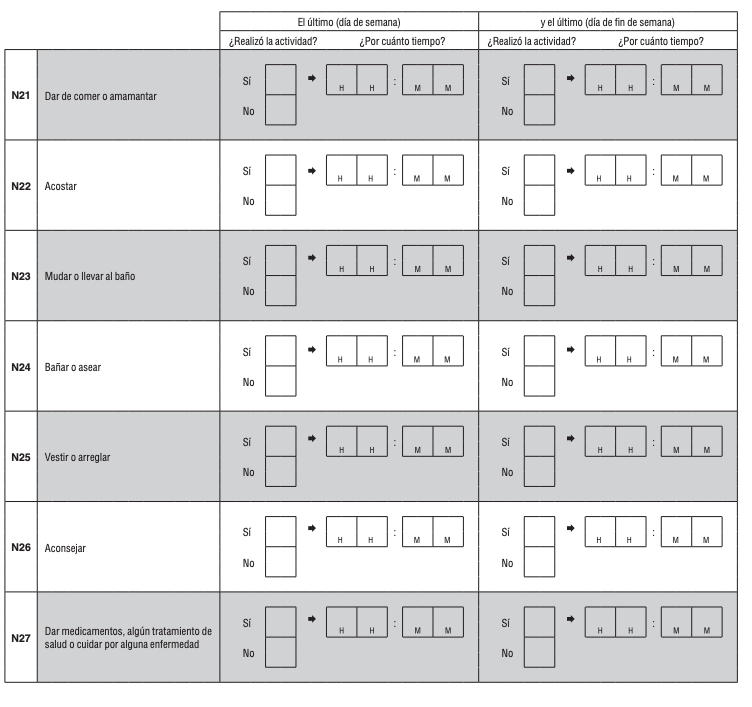
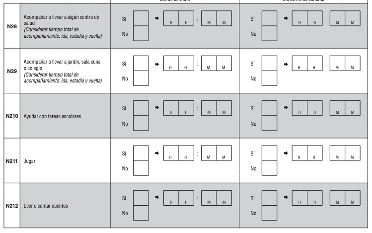
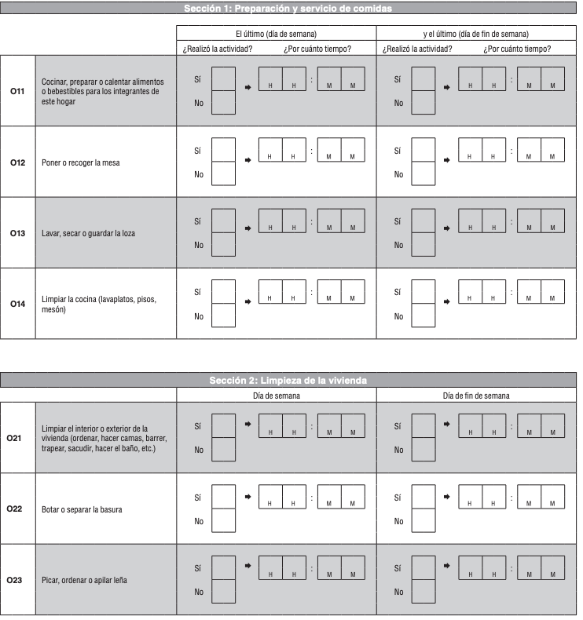
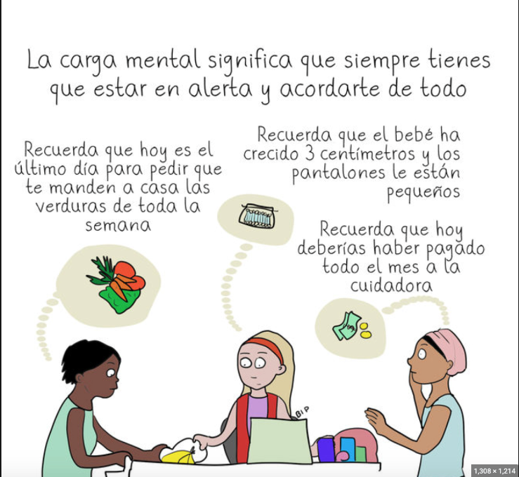
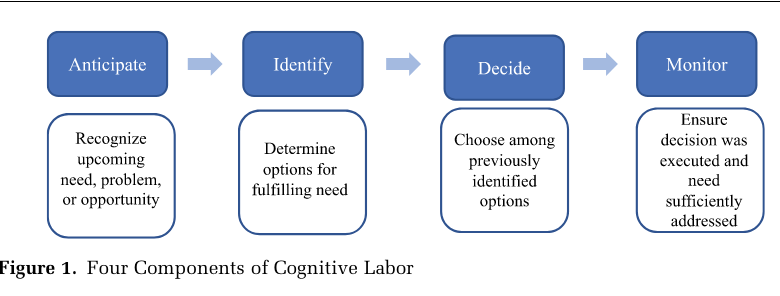
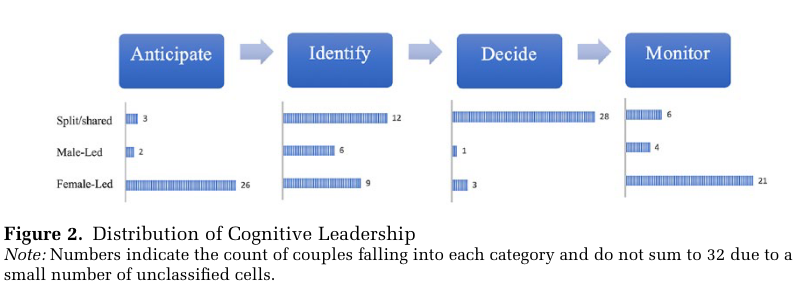

Clase 10: Familia y Ma/Paternidades
SOL191 · Instituto de Sociología · PUC
SOL191 · Clase 10: Familia y Ma/Paternidades
En 2023-2024, el 43,8% de las mujeres ocupadas es proveedora principal del hogar, lo que implica un alza de 14,4 puntos porcentuales en los últimos 13 años.





Segunda jornada (Hochschild 1989)
Las mujeres con empleo remunerado asumen además el grueso del trabajo doméstico y de cuidado; las parejas construyen relatos para justificar el reparto.
Maternidad intensiva (Hays 1996)
Ideología cultural: la crianza es exigente, centrada en el/la hijo/a y responsabilidad de la madre.
Carga cognitiva (Daminger 2019)
El trabajo invisible de anticipar, identificar, decidir y monitorear las necesidades del hogar.
¿En qué nivel opera cada lente: individual (micro), interaccional (meso) o institucional (macro)? ¿Cuál explica mejor los datos de uso del tiempo que acabamos de ver?
¿Los planes de tener hijos/as en el futuro afectan de manera diferente las aspiraciones y decisiones de carrera de mujeres y hombres?
Actividad en grupos de 2-4 personas.
En el artículo identificar ejemplos de cómo hombres y mujeres viven los distintos procesos:
Ir anotando en la pizarra en la medida que los encuentran.
| Proceso | Mujeres | Hombres |
|---|---|---|
| 1. Mental (trabajo mental de anticipar la ma/paternidad) | 77% menciona hijos/as o cuidado al imaginar su carrera en 5-10 años, sin que se les pregunte. Incertidumbre: “Maybe I’ll just be a mom. Maybe I’ll be working part-time” (Marcella). Se ven como “las planificadoras”. | Solo 10% lo menciona. Ven su carrera con un lente centrado solo en el trabajo: más senioridad, emprender, autonomía. “That’s a good question… I don’t know” (Donald). Les preocupa conservar “su tiempo”. |
| 2. Emocional (preparar la intersección trabajo-ma/paternidad) | Estrés y ansiedad: “It freaks me out!”. Presión por calzar estudios y carrera con el calendario de la maternidad (Allie y el MBA). Doble juicio: trabajar full-time, part-time o quedarse en casa siempre será criticado (Denise). | Libres de esas consecuencias emocionales: ningún hombre que planeaba estudiar o cambiar de trabajo mencionó ansiedad por coordinarlo con la paternidad. |
| 3. Comportamiento (ajuste de metas de carrera) | Asumen que sus preferencias cambiarán con los hijos/as y posponen estudios (Lacy, Jessica). Se anticipan como cuidadoras principales: renuncian a cargos de liderazgo (Betsy), se quedan en empleos “buenos para tener hijos” (Erin), eligen sectores más flexibles y peor pagados (Paula: derecho público; médica → asistente médica). | Pocos ajustan sus metas, y si lo hacen es para “acelerar” según el rol de proveedor: más sueldo y estabilidad (Charles, Toby, Zach). El MBA y los ascensos siguen en pie. |
Resultado: las trayectorias de mujeres y hombres se separan antes de tener hijos/as, aun en parejas igualitarias que casi nunca han conversado el tema. “His salary is gonna ultimately completely eclipse mine” (esposa de Zach).

La dimensión cognitiva implica:


Diseño
Estudio de eventos alrededor del nacimiento del primer hijo/a, con datos de panel de encuestas de hogares de Chile, México, Perú y Uruguay.
Contexto
Los países con normas de género más conservadoras y políticas familiares menos generosas tienen mayores brechas entre madres y no madres.
¿Es la flexibilidad una solución para conciliar o una trampa? ¿Qué políticas cambiarían el resultado: sala cuna universal, postnatal compartido, flexibilidad laboral para ambos?
¿Qué estereotipos reproducen estas representaciones?
¿Cuáles son los principales desafíos que enfrentan los padres gay entrevistados?
¿Qué estrategias siguen para enfrentar estos desafíos?
Estrategias de protección:
“No queremos darles a entender un mensaje erróneo de que es algo malo.”
¿Qué aspectos…
…nos ayudan a comprender las experiencias de desigualdad que viven los padres gay en Chile?
5 minutos, en Wooclap:
SOL191 Sociología del Género · Clase 10